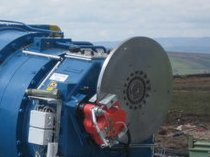

This synoptic has two presentation levels: "Collapsed" and "Expanded". The above figure shows the "Expanded" one. The "Collapsed" one shows only the upper part.
The upper part contains active photo realistic representations of each element of the Drive Train.
Starting by the left, the Hub and the Blades. As the Blades would take a very big part of the synoptic, they have been replaced by their profile and indication of the pitch angle. This is a much better presentation for the pitch value, a key value for the Drive Train.
Going to the right continues with the main bearing, the element that supports the weight of the Blades and the Hub itself.
The rotor connects the Hub to the gearbox. The typical gearbox in a Wind Turbine is fixed ratio, with a value around 70. That corresponds to around 20 rpms in the rotor and around 1500 rpms in the generator.
The synoptic shows a simplified version of the gearbox. Typically they are multistage, with planetary gears. As the main purpose of the synoptic is to show easy to understand magnitude this gearbox has a 1:2 relation, so for normal production rotor speeds (around 20 rpms) you can visualize the rotational effects in the generator's side.
Next to the gearbox, going to the right, you find the braking system. Again this does not correspond "exactly" to a real brake used in actual Wind Turbines, but rather shows in visible sizes all the functional components.
An example is shown in the next figure. Notice the disc brake and the hydraulic actuated brake (red).

The disc brake is the place where the kinetic energy of the DriveTrain is dissipated. That happens when the caliper attached to the head of a hydraulic piston touch it.